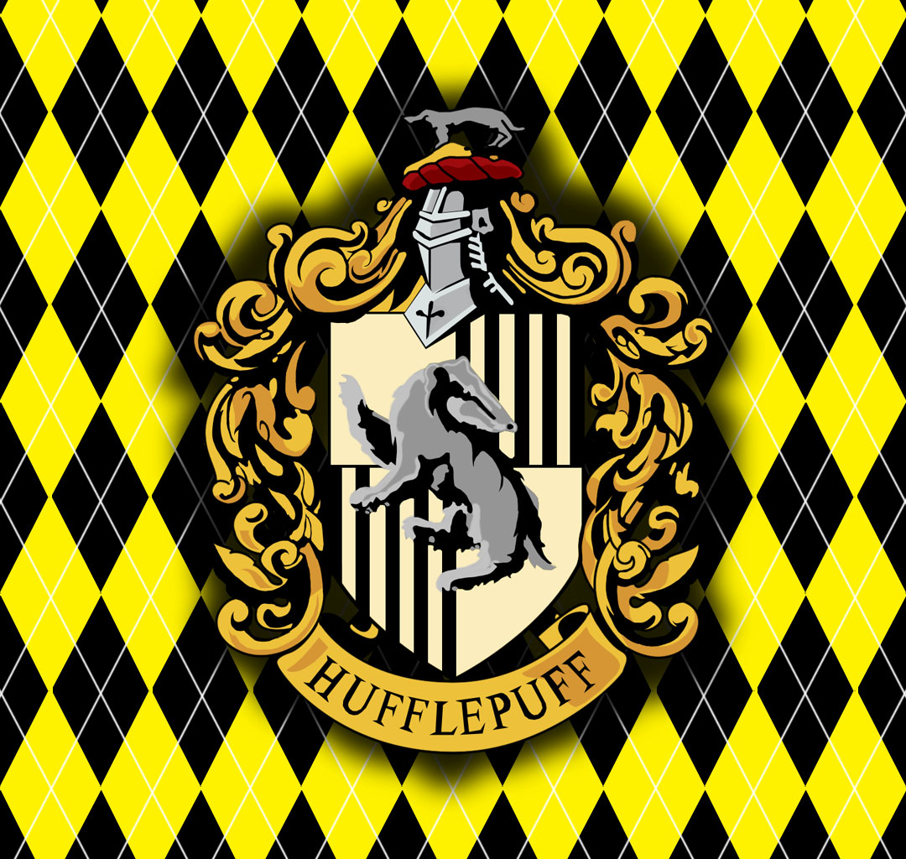

Portal Hogwarts © - 2026.

Lufa-Lufa é uma das quatro casas de Hogwarts, reconhecida por enaltecer lealdade, dedicação, paciência e trabalho em equipe. Fundada por Helga Hufflepuff, a casa aceita alunos gentis, justos e esforçados, que acreditam na amizade e na igualdade entre todos. Seus alunos usam as cores da casa: amarelo e preto, e seu símbolo é o texugo, o que representa persistência e lealdade. Os alunos da Lufa-Lufa costumam ser vistos como companheiros confiáveis e trabalhadores determinados. Entre os membros mais conhecidos da casa estão Cedrico Diggory e Newt Scamander. A casa é famosa por formar bruxos humildes, honestos e sempre dispostos a ajudar os outros.
Portal Hogwarts © - 2026.